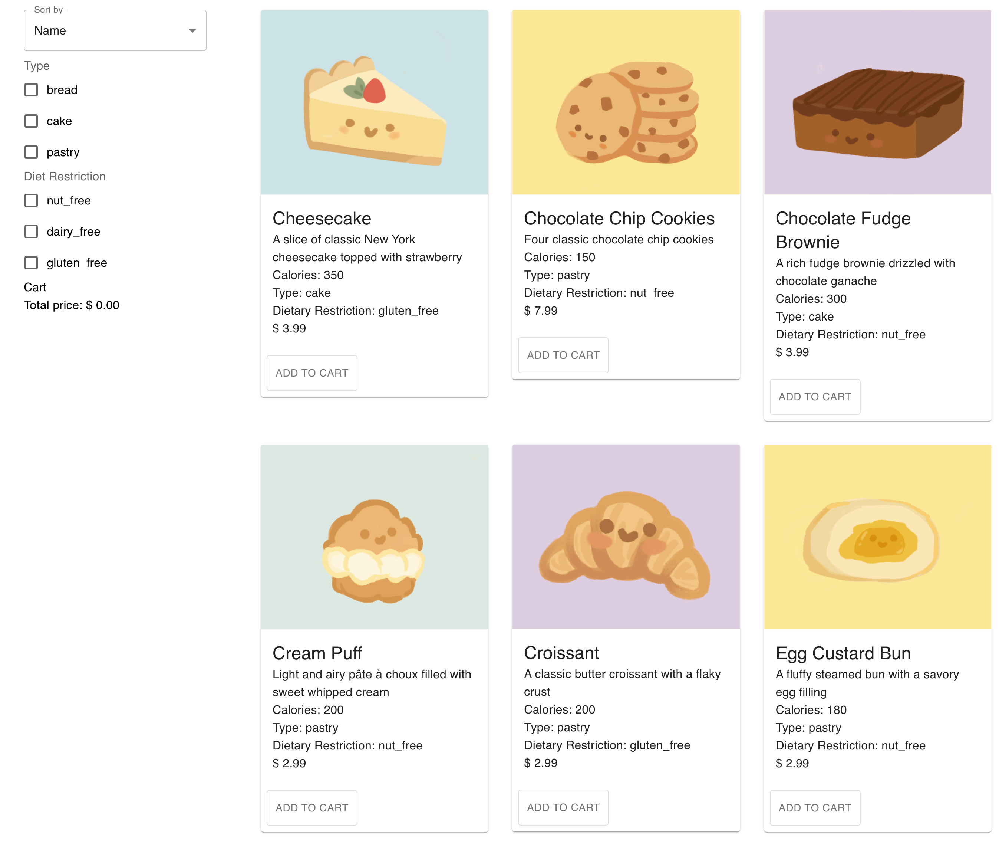

Interactive Interface
The Deployed Website
- The screenshot of the deployed interactive interface

Here is the link: https://healthycat102.github.io/Development/
Goal and Value of the Application
The goal and value of the application is to let users to fast select bakery items they want to buy via filtering
(type and dietary restrictions) and sorting (name, price, calories). This application list items for purchase and
cart that totals their price. Any combination of filters, and all filters and sorting methods work together to let
user quickly select items within their requirement.
Usability Principles Considered
- Effectivity: Reach the goal: the application enables the user to work effectively by providing a suitable functionality for the completion of his/her purchase.
- Efficiency: Reach the goal quickly: By providing filters and sorting methods, and any combinations of them work together, the application requires only minimal time to react and execute an action.
- Controllability: The user has control over all actions. He may cancel, pause, and resume actions at a point in time. It's possible for him to revert an action and, as the case may be, start a new attempt if the result was not satisfactory.
- Consistency: Everything fits together: The application follow the general conventions with consistennt usage of terms, icons, and layouts.
- Design and layout: comprehensible at first sight: Information and components are generally presented to the user in a way that they can be noticed annd that texts can be read easily.
Organization of Components
- Each item is abstracted into a component and instantiated from within the app.
- Each filter is abstracted into a component and instanciated from within the app.
- The sorting function is not abstracted as a component since only one sorting dimention is needed (no reuse). However, it can also be abstracted out as a component for cleanness.
How Data is Passed Down Through Components
- For each item component, the item object is passed in so that the compnent is able to display item information. Furthermore, a property indicating whether the item is added to cart is also passed in to control the "add to cart" button functionality.
- For each filter component, a state that stores whether each variant is selected or not is passed in, so that the updated list of items can be computed from outside the component (within the app) when the user changes the filter.
How the User Triggers State Changes
The user can trigger state changes via three ways:
- Click "ADD TO CART"
- Select Sorting methods, like sorting by calories, sorting by price, or sorting by name.
- Select filter options, for example, select "cake" and "pastry" in "Type" filter, and/or select "nut-free" in "Diet Restriction" filter.